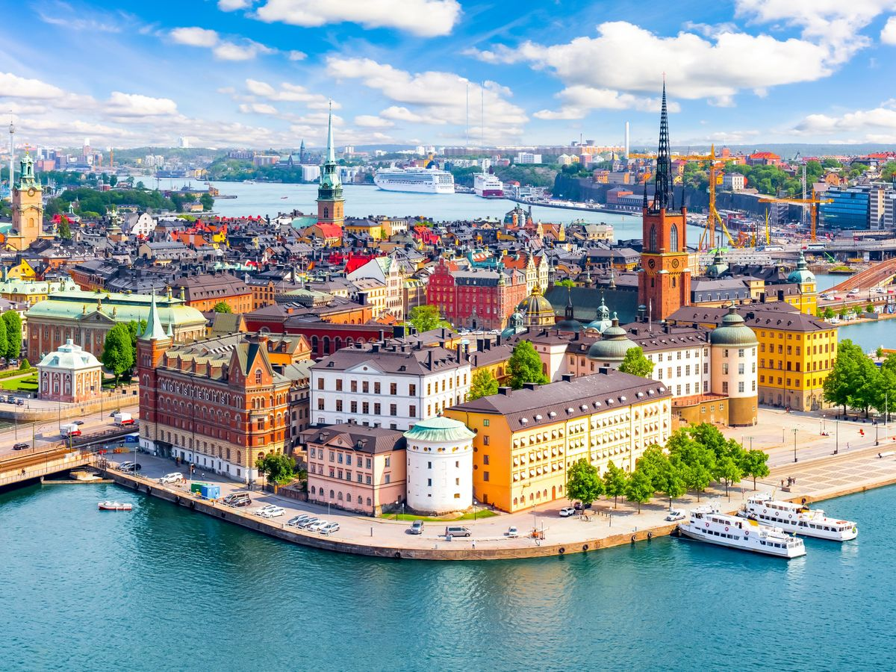
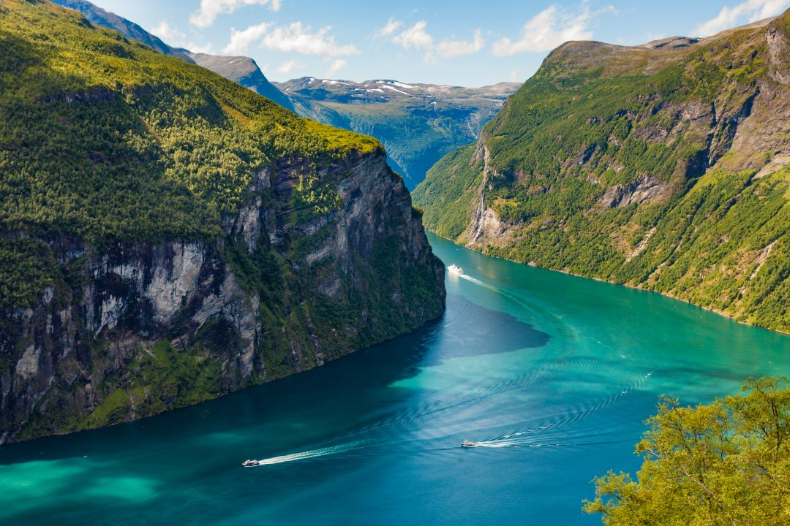
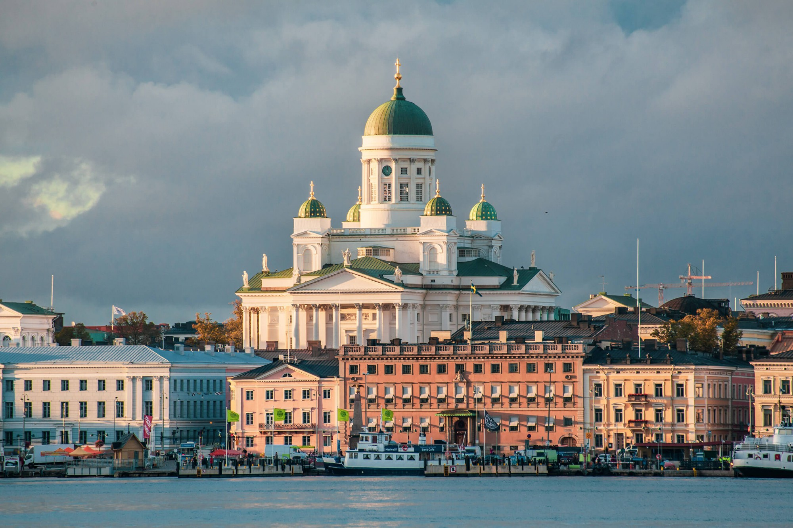
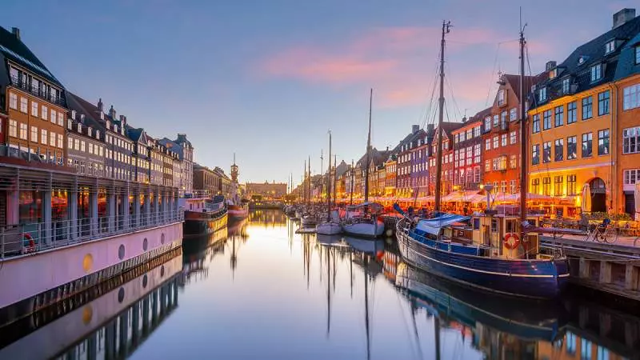
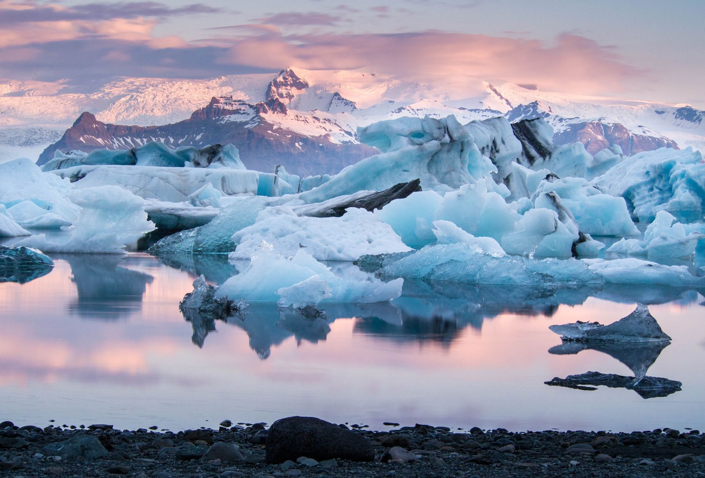

Severní Evropa se rozkládá od Baltského moře až po Arktidu a zahrnuje země jako Švédsko, Norsko, Finsko, Dánsko a Island. Tento region je známý svou nádhernou, nedotčenou přírodou, moderními městy, bohatou historií a unikátními kulturními tradicemi. Nabízí rozmanité krajiny – fjordy, ledovce, jezera, rozlehlé lesy, malebné vesnice i rušné metropole. Lidé sem jezdí objevovat přírodu, za historií i moderním životním stylem. Severní Evropa je také známá vysokou kvalitou života, bezpečím, ekologickým přístupem a inovacemi v designu a architektuře. Region nabízí spoustu možností pro turistiku, sport, kulturní zážitky a gastronomii, ať už hledáte klidné odpočinkové destinace nebo aktivní dobrodružství.
Hlavní město: Stockholm. Švédsko je země tisíce ostrovů, rozlehlých lesů a moderních měst. Stockholm je historické centrum Gamla Stan, královský palác, Vasa Museum a královské zahrady. Milovníci přírody mohou navštívit národní parky, ostrovy a rozsáhlá jezera. Švédsko nabízí také cyklostezky, sportovní aktivity a tradiční švédskou gastronomii.
Hlavní město: Oslo. Norsko je synonymem fjordů a hor. Nejznámější fjordy jsou Sognefjord a Geirangerfjord, kde lze podniknout plavby lodí, trekking a pozorovat polární záři. Oslo kombinuje moderní architekturu, operu a kulturní instituce. Severní Norsko nabízí zimní sporty, rybolov a autentický kontakt s místními tradicemi.
Hlavní město: Helsinky. Finsko je země tisíců jezer a panenské přírody. Laponsko láká polární září, sámskými vesnicemi a zimními sporty. Helsinky kombinují historické památky a moderní design, kavárny a muzea. Finsko je proslulé saunovou kulturou, outdoorovými aktivitami a možností poznat autentický život ve finské přírodě.
Hlavní město: Kodaň. Dánsko je malá, ale kulturně bohatá země. Kodaň nabízí přístav Nyhavn, historické paláce a sochu Malé mořské víly. Země je ideální pro cyklisty, rodiny s dětmi a milovníky designu. Dánská gastronomie zahrnuje pečivo, ryby a tradiční speciality. Dánsko je také plné muzeí, festivalů a přátelských komunit.
Hlavní město: Reykjavík. Island je známý svou divokou přírodou – sopky, ledovce, gejzíry, vodopády a horké prameny. Reykjavík nabízí moderní život, kulturu a gastronomii. Na Islandu lze pozorovat velryby, polární záři, navštívit geotermální lázně a objevovat unikátní sopečné a ledovcové krajiny.
